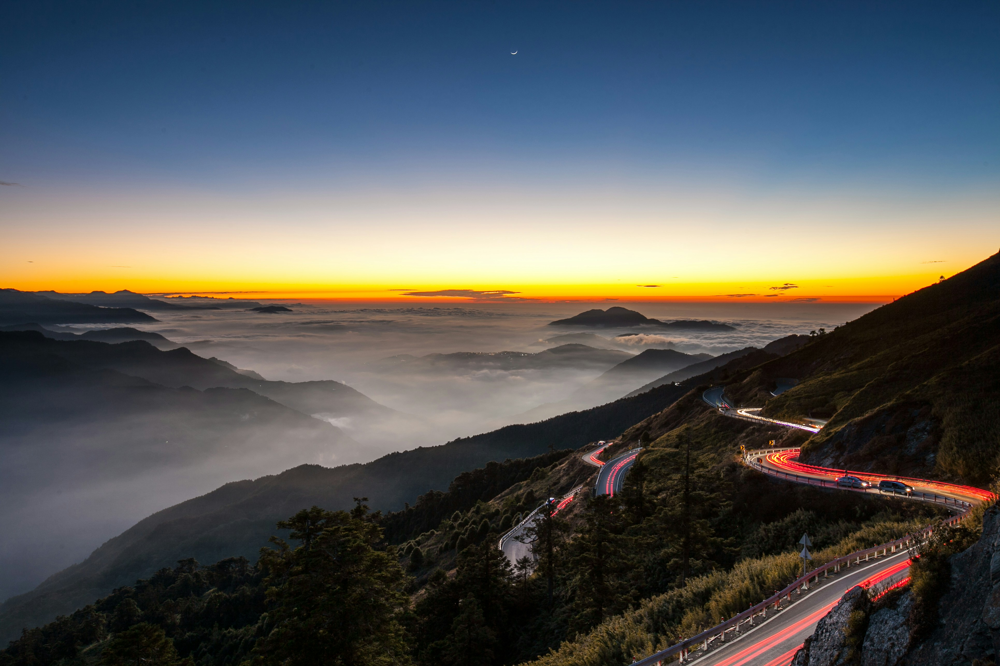

Explore Taiwan
Beyond the Skyline, Navigating Taiwan's Natural Highs
Get StartedWhy Visit Taiwan
Modern Infrastructure
Taiwan's public transit and high-speed rail networks enable rapid, reliable movement between major hubs. Navigate dense urban centers and tech districts with zero friction.
Culinary Density
Experience a high concentration of world-class night markets and Michelin-rated dining. The island offers a diverse range of flavors, from traditional Hokkien dishes to innovative fusion.
Accessible Wilderness
Mountain ranges and coastal preserves are located within an hour of major cities. This unique geography allows for high-altitude hiking and marine exploration without extensive travel time.
Night Markets
Taiwanese night markets function as high-density culinary and social ecosystems where commerce and tradition intersect. These markets are defined by "xiaochi," or small eats, allowing for a diverse sampling of iconic dishes like oyster omelets, stinky tofu, and pepper buns within a compact urban footprint. Beyond the food, they serve as comprehensive entertainment districts featuring retail vendors, traditional games, and wellness services. The operational efficiency and sensory intensity of these hubs make them the primary engine of Taiwan's nocturnal economy and a central pillar of its cultural identity.
High-Speed Rail Infrastructure
The Taiwan High Speed Rail (THSR) is a 350km artery connecting Taipei and Kaohsiung in 94 minutes. Built on Japanese Shinkansen technology, the system operates with a 99% punctuality rate and handles over 200,000 passengers daily. It serves as a case study in high-density transit efficiency, featuring 700T series trains that reach speeds of 300 km/h to bridge the island's western economic corridor.
High Mountain Oolong

Taiwan's "Gao Shan" (High Mountain) tea is defined by cultivation at elevations exceeding 1,000 meters, primarily in regions like Ali Shan and Li Shan. The high-altitude climate—characterized by cooler temperatures and persistent mist—slows leaf growth, concentrating aromatic oils and reducing bitterness. This specific terroir produces complex, floral oolongs that are hand-plucked and processed using traditional semi-oxidation techniques.
Heard Enough?
Start planning your Taiwan adventure today.
Plan Your Trip